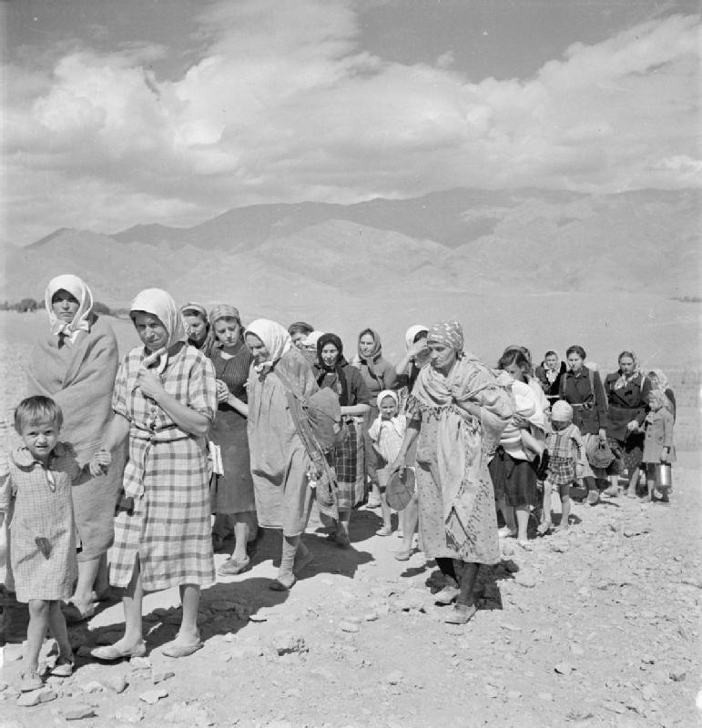

Polish refugees and the Anders' Army in Uzbekistan during World War II (1941–1942)
In July 1941 the Sikorski–Mayski agreement restored Soviet–Polish relations and opened the way to forming a Polish army in the USSR. Commanded by General Władysław Anders, this army was relocated in early 1942 to Uzbekistan and other Central Asian republics, with its headquarters at Yangiyul. Thousands of Polish civilians, including many children, also came south; hunger and a typhus epidemic took many lives. Between March and September 1942 the army and civilians — about 115,000–116,000 people in all — were evacuated via Krasnovodsk to Iran. Based on reputable historical sources.

During World War II Uzbekistan not only sent its own citizens to the front but also sheltered many people relocated from the western USSR. One such episode is the presence in Uzbekistan in 1941–1942 of the Polish army commanded by General Władysław Anders, and of thousands of Polish civilians. Below these events are set out on a facts-only basis, drawing on reputable historical sources.
Background: the Sikorski–Mayski agreement and the 'amnesty'
After Germany invaded the USSR on 22 June 1941, the Soviet Union joined the Allied side. On 30 July 1941 an agreement was signed in London between the Polish government-in-exile (Prime Minister General Władysław Sikorski) and the USSR (Ambassador Ivan Mayski); it restored Soviet–Polish diplomatic relations and provided for the formation of a Polish army on Soviet soil. An 'amnesty', announced by a Soviet decree of 12 August 1941, freed Polish citizens who had been deported or imprisoned after eastern Poland was occupied in 1939 from camps, prisons and collective farms.
Formation of the Anders' Army
General Władysław Anders was released from Moscow's Lubyanka prison, appointed army commander on 4 August 1941, and issued his first orders on 22 August. The army began forming in autumn 1941 in the Volga and southern Ural region — near Buzuluk (headquarters), Totskoye and Tatishchevo. During Sikorski's visit to Moscow in December 1941 it was agreed to relocate the army to Central Asia.

Relocation to Uzbekistan (early 1942)
From January 1942 the army was moved by rail to Uzbekistan and other Central Asian republics. Assembly and training points included places such as Samarkand, Kermine (Karmana), Jalalabad and Ura-Tyube (Istaravshan); by spring 1942 the organising centre was near Tashkent. According to sources, within Uzbekistan the headquarters was at Yangiyul, with units stationed around Shahrisabz, Kitab, Kermine and Margilan.
Polish civilians and harsh conditions
Along with the army, thousands of Polish civilians — including many children and orphans — also came south to Central Asia. Estimates of the number of Poles deported in the USSR range widely, from about 320,000 to over a million — a figure contested among historians. According to the US Holocaust Memorial Museum (USHMM), some 90 orphanages were set up across the Russian, Kazakh, Kyrgyz, Tajik and Uzbek republics. Hunger, overcrowding and epidemics prevailed; a typhus epidemic began to ease only toward late February 1942. According to one source, about 10,000 troops and civilians (many of them children) died of typhus.
The 1942 evacuation via Krasnovodsk to Iran
In 1942 the army and many civilians were evacuated from the USSR to Iran: by rail to Krasnovodsk (Turkmen SSR), then across the Caspian Sea to the Iranian port of Pahlavi (today Bandar-e Anzali). The first stage, 24 March–4 April 1942, moved 33,069 soldiers and 10,789 civilians (including 3,100 children). The second stage, about 9 August–1 September 1942, moved 69,247 people in all, of whom 25,501 were civilians (9,633 children). In total, sources give about 115,000–116,000 people (roughly 78,000 soldiers and 37,000 civilians).
The mark left in Uzbekistan: cemeteries and memory
Along the route the army and civilians took, Polish war cemeteries survive in Uzbekistan — including at Guzar, Kermine (Karmana), Shahrisabz, Kitab and Yangiyul. According to the 'Polskie cmentarze w Uzbekistanie' project, most of the graves have been restored with Polish government funding; the Polish war cemetery at Shahrisabz is recorded as holding about 256 graves (a figure from a single source).
What became of them
After reaching Iran, the force passed to Western Allied command and became the Polish II Corps under Anders. The corps fought in the Italian Campaign and captured Monte Cassino on 18 May 1944. Thus many of the people who found temporary refuge in Uzbekistan went on to form part of the Polish diaspora in the West after the war.

Sources
- Wikipedia — Anders' Army (formation, commanders, relocation)
- Wikipedia — Evacuation of Polish civilians from the USSR in WWII (1942 figures)
- Wikipedia — Sikorski–Mayski agreement (30 July 1941)
- Polskie cmentarze w Uzbekistanie — The Army / Cemeteries (camps in Uzbek SSR)
- USHMM — Tehran Children (deportees, orphanages, conditions)